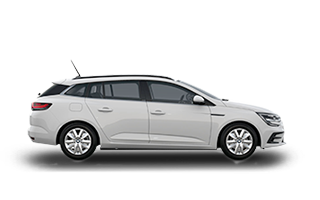

Grand scenic
Grand scenic Kadjar
Kadjar  Clio
Clio Amit érdemes tudni a RENAULT-ról...
A céget „Société Renault Frères” néven 1898-ban alapította meg Louis Renault, valamint két testvére Marcel és Fernand. Már hamar a versenyek felé fordult a figyelmük; de Marcel az 1903-as Párizs-Madrid autóversenyen életét vesztette. Ezután Louis már nem ült többet a volán mögé. A Renault AK 90CV viszont – a gyár akkori tesztelési osztályvezetőjével, Szisz Ferenccel a nyergében – megnyerte az 1906-os Grand Prix versenyt.
Az első világháború idején a gyár haditermelésre állt át. Gyártottak lőszert, katonai repülőgépeket valamint a Renault FT tankot.
A második világháborúig leginkább mezőgazdasági és ipari gépeket gyártottak. Mivel a cég a világháború alatt együttműködött a német megszállókkal, ezért a háború után a gyárat államosították és „Régie Nationale des Usines Renault” néven alakult újjá, Pierre Lefaucheux vezetésével.
Az első új autómodell a farmotoros és hátsókerék-hajtású „4CV” volt. 1955-ben megalakították az Société Automobiles Alpine céget.
A korábbi modellt a Dauphine váltotta fel.
A vállalat az 1960-as és 1970-es években kezdett terjeszkedni Kelet-Európában és Dél-Amerikában. A Dacia 1966-ban jött létre Romániában, a Renault 8 Dacia 1100 modellnéven néven történő gyártására.
A Renault 5 modellt 1972-ben adta ki. Az 1973-ban kitört olajválság miatt a gazdaságos kisautó hamar népszerű lett. A különféle változatait egészen 1996-ig gyártották.
1976-ban az Alpine-ből a Gordini tuningműhely beolvasztásával létrehozták a Renault Sport részlegét. 1991-ben jelent meg a Clio.
A céget 1996-ban privatizálták, létrejött a Renault S.A. 1999-ben kötöttek megállapodást a Nissannal. 2001-ben eladták a teherautó részleget a Volvónak.
Forrás: Wikipédia
| Hivatalos Renault weboldal | |
| Jelentkezés tesztvezetésre | |
| Ismerd meg modelljeinket | |
| Grand scenic | Kadjar |
|  Megan Grand Tour | Clio |